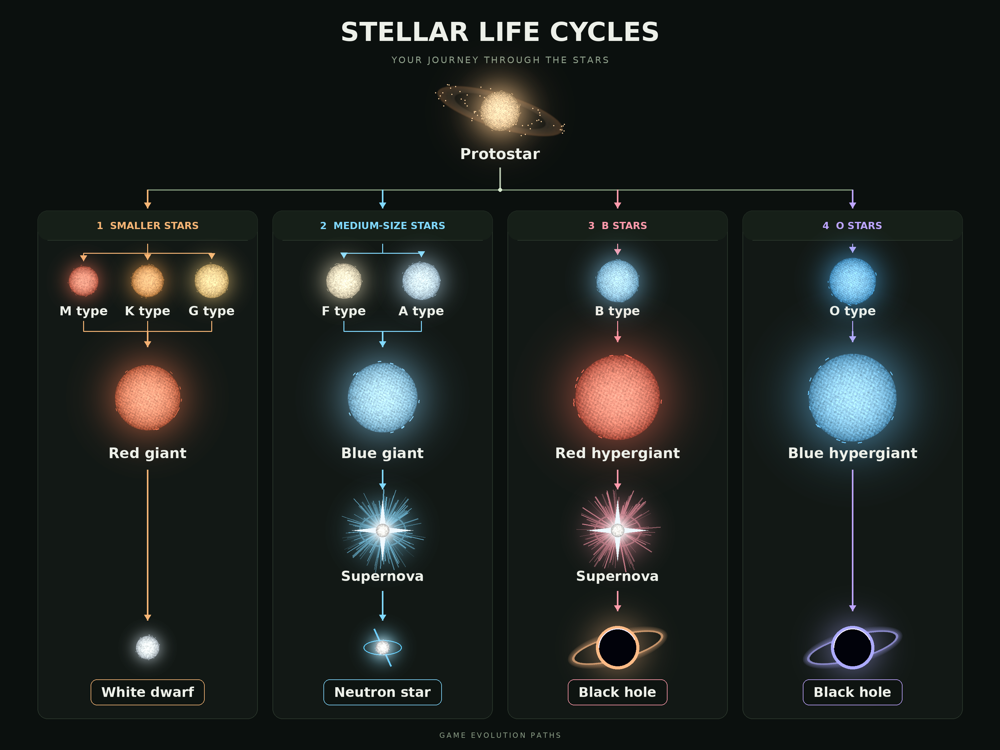

Enter the market
Enter your name and choose Start simulation. You begin with 10,000 CR. Returning players can choose Resume simulation.
The first player starts the shared universe. Once running, it keeps moving for everyone.
Buy and sell shares in stars. Read the news, watch stars evolve, and grow your net worth: your cash plus the current value of your shares.
Enter your name and choose Start simulation. You begin with 10,000 CR. Returning players can choose Resume simulation.
The first player starts the shared universe. Once running, it keeps moving for everyone.
Left: live prices and rankings. Select a star to inspect it.
Middle: news about events and stellar changes.
Right: the selected star’s candle chart, details and order controls. Chart markers open related news.
Choose Buy, then use a quantity shortcut or type an amount. Choose Sell and use the slider to sell shares you own. Manual entry supports fractional shares.
Check the estimate, then confirm your order. Your order affects the execution price, so the final cost can differ from the quote.
Stars follow different paths as they age. Their brightness, events and trading activity affect their prices. A giant or supernova can bring a dramatic change; a black hole has zero value and cannot be traded.

Events can change a star’s price or its future. Read the updates: the first headline does not always reveal how the story ends.
Compare the news sources. Some exaggerate, some report cautiously, and some report late. Look for follow-up stories before treating speculation as fact.